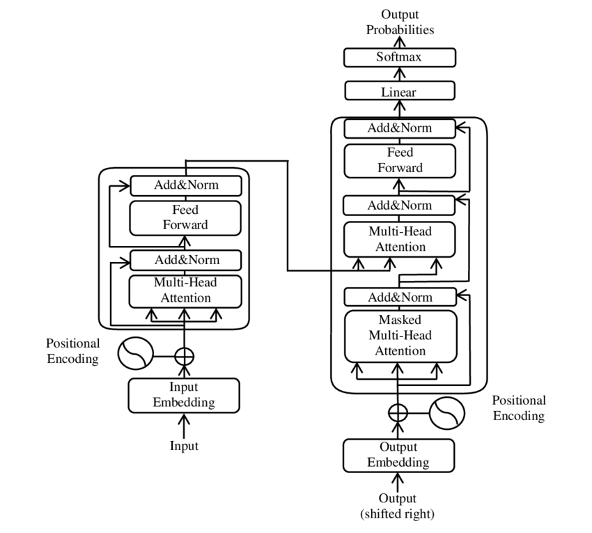
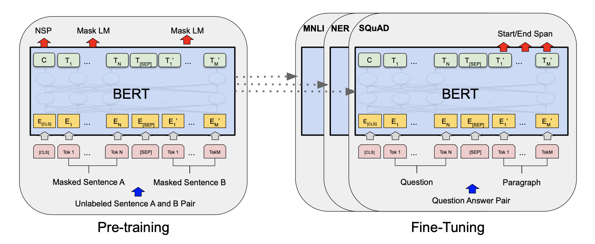

| texto | etiqueta | |
|---|---|---|
| 0 | El matador de toros David Galvan sustituye el ... | N |
| 1 | Tenía pedido de captura y lo detuvieron cuando... | P |
| 2 | @Domikook2 Todo comenzó hace un par de años cu... | N |
| 3 | El gobierno de Guatemala declaró el #04Sep un ... | P |
| 4 | Suicidarse por retorno de La Corrupción y impu... | N |
| 5 | En @rcnradio @Valledupar_Col : Policía herido ... | P |
| 6 | cr7 united classificado para o mata mata | N |
| 7 | #ApaseoElGrande Hallan 2 cuerpos calcinados en... | P |
Impacto del Procesamiento de Lenguaje Natural en la Educación
INFOTEC
INFOTEC
Aguascalientes, México

INFOTEC
Centro Público de Investigación del Gobierno Federal, que contribuye a la Transformación Digital de México, a través de la investigación, la innovación, la formación académica y el desarrollo de productos y servicios TIC. Sus alcances abarcan al sector público y privado, habilitando caminos que conduzcan hacia un México moderno y de inclusión digital.
Introducción
Definiciones
Inteligencia Artificial (IA)
Conjunto de teorías, métodos y algoritmos para el desarrollo y estudio de sistemas que presentan un comportamiento que sería identificado como inteligente.
Aprendizaje Computacional
Aprendizaje Computacional es una subárea de Inteligencia Artificial que estudia el desarrollo e implementación de algoritmos capaces de aprender de datos de manera autónoma sin haber sido explícitamente programados.
Procesamiento de Lenguaje Natural
Conjunto de teorías, métodos y algoritmos para el desarrollo y estudio de sistemas que permitan el entendimiento, generación y manipulación del lenguaje humano.
Percepción de Inteligencia Artificial (IA)
Así la vemos

Así está
IA en Educación
Tareas
L. Chen, Chen, y Lin (2020)
- Calificar y dar retroalimentación.
- Creación de planes de aprendizaje personalizados.
- Predecir deserción.
- Estilo de aprendizaje basado en información personal.
- Descubrir dificultades de los estudiantes.
- Selección de cursos.
Tendencias
X. Chen et al. (2022)
- Tutores Inteligentes - educación especial, infancia.
- Procesamiento de Lenguaje Natural - Enseñanza del lenguaje.
- Minería de datos - Predicción de rendimiento.
- Redes neuronales - Evaluación de enseñanza.
- Computación afectiva - Detección de emociones.
- Sistemas de recomendación - Aprendizaje personalizado.
Ambiente Educativo Inteligente
(Zatarain Cabada, Cárdenas López, y Escalante 2023)
Ambiente Educativo
Enfoque educativo, contexto cultural y espacio donde el proceso de enseñanza aprendizaje se realiza.
Sistema de Tutoría Inteligente
Proceso de aprendizaje que usa algún tipo de inteligencia para guiar a los estudiantes.
Ambiente Educativo Inteligente (AEI)
Combinación de un ambiente educativo con un sistema de tutoría inteligente.
Ambiente Educativo Afectivo
AEI con un modelo cognitivo usando medición de estados afectivos como pueden ser rasgos de personalidad y emociones.
Procesamiento de Lenguaje Natural
FractionLearning
https://fractionlearning-env.web.app/form
Ambiente Educativo Afectivo
- Modelos de personalidad.
- Voz a texto.
- Estilos de aprendizaje.
- Verbal-secuencial.
- Verbal-global.
- Visual-secuencial.
- Visual-global.
FractionLearning (2)
FractionLearning (3)
Modelo de Personalidad
- Amabilidad.
- Apertura.
- Neuroticismo.
- Responsabilidad.
- Sociabilidad.
Categorización de Texto
Desarrollar algoritmos que identifiquen la categoría de un documento (frase) de un conjunto de clases previamente definido.
Ingredientes
- Conjunto de entrenamiento.
- Representación de texto.
- Clasificador / Regresor.
Conjunto de entrenamiento
https://ingeotec.github.io/Delitos
Clasificador
Representación de Texto
Bolsa de palabras
- Asociar cada palabra a un identificador.
- de \(\rightarrow\) 1.
- que \(\rightarrow\) 2.
- buenos \(\rightarrow\) 216.
- dias \(\rightarrow\) 101.
buenos días
\((215, 100)\)
La bolsa no tiene orden
\((100, 215)\)
Modelo lineal
\(y = \sigma( \sum_{i \in (100, 215)} w_i x_i + w_0)\)
Parámetros
\(x_i\) TFIDF / \(w_i\) valor estimado
Representación de Texto (2)
Bolsa de Palabras / Limitantes
- No existe similitud entre palabras.
- Se pierde el orden.
- Vector disperso.
Embeddings estáticos
- Hipótesis distribucional.
- Similitud entre palabras.
- Vector denso.
Embeddings estáticos / limitantes
- Se pierde el orden.
- Independientes del contexto.
Representaciones con Contexto
Attention is All you Need

BERT

Entrenamiento de Transformers
Aprendizaje auto-supervisado
Proceso automático que transforma un conjunto no etiquetado en uno etiquetado.
Cloze test
México exporta ___ que se ___ en Michoacán.
Predicción de la siguiente frase
Clasificación binaría.
Categorización de Texto
Identificación
- Personalidad.
- Emociones.
- Polaridad.
- Agresividad.
Características
- Problemas de clasificación.
- No hay comunicación.
- Específico.
Modelo de Lenguaje
Fundamentos
Modelo del Lenguaje
Es un modelo probabilístico de un lenguaje natural que asigna probabilidades a una secuencia de palabras.
Michoacán es el mayor productor de
- camarones
- aguacate
Modelo \(n\)-gram
\(P(w_i | w_1, \ldots, w_{i-1}) = \frac{C(w_1, \ldots, w_{i-1}, w_i)}{C(w_1, \ldots, w_{i-1})}\)
Modelo general
\(P(w_i | w_1, \ldots, w_{i-1}) = f(w_1, \ldots, w_{i-1})\)
Redactar
Redactar (2)
Calificar
Aprender Idiomas

Identificación de Plagio
Aplicaciones
Modelos Grandes de Lenguaje
Conclusiones
Definiciones
- Inteligencia Artificial
- Aprendizaje Computacional
- Procesamiento de Lenguaje Natural
Aplicaciones
- Clasificación de texto
- Comprensión
- Generativas
Retos
X. Chen et al. (2022)
- Privacidad - Aprendizaje personalizado.
- Incentivar el uso de IA por los docentes.
- Nuevos modelos de Aprendizaje Computacional.
Foros importantes (index H)
- International Journal of Artificial Intelligence in Education.
- International Conference of Artificial Intelligence in Education.
- Computers & Education.
Referencias
Bormuth, John R. 1968. «Cloze test readability: Criterion reference scores». Journal of educational measurement 5 (3): 189-96.
Chen, Lijia, Pingping Chen, y Zhijian Lin. 2020. «Artificial intelligence in education: A review». IEEE Access 8: 75264-78.
Chen, Xieling, Di Zou, Haoran Xie, Gary Cheng, y Caixia Liu. 2022. «Two decades of artificial intelligence in education». Educational Technology & Society 25 (1): 28-47.
Devlin, Jacob, Ming-Wei Chang, Kenton Lee, y Kristina Toutanova. 2019. «BERT: Pre-training of Deep Bidirectional Transformers for Language Understanding». En Proceedings of the 2019 Conference of the North American Chapter of the Association for Computational Linguistics: Human Language Technologies, Volume 1 (Long and Short Papers), editado por Jill Burstein, Christy Doran, y Thamar Solorio, 4171-86. Minneapolis, Minnesota: Association for Computational Linguistics. https://doi.org/10.18653/v1/N19-1423.
Vaswani, Ashish, Noam Shazeer, Niki Parmar, Jakob Uszkoreit, Llion Jones, Aidan N Gomez, Łukasz Kaiser, y Illia Polosukhin. 2017. «Attention is All you Need». En Advances in Neural Information Processing Systems, editado por I. Guyon, U. Von Luxburg, S. Bengio, H. Wallach, R. Fergus, S. Vishwanathan, y R. Garnett. Vol. 30. Curran Associates, Inc. https://proceedings.neurips.cc/paper_files/paper/2017/file/3f5ee243547dee91fbd053c1c4a845aa-Paper.pdf.
Zatarain Cabada, Ramón, Héctor Manuel Cárdenas López, y Hugo Jair Escalante. 2023. Multimodal Affective Computing. 1st ed. Springer.